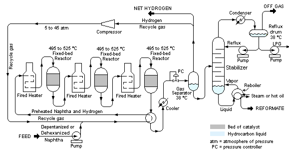

In chemistry, reforming is processing technique by which the molecular structure
of a hydrocarbon is rearranged to alter its properties. The process is frequently
applied to low-quality gasoline stocks to improve their combustion characteristics.
Types of Reactors
1) Thermal reforming alters the properties of low-grade naphthas by
converting the molecules into those of higher-octane number by exposing
the materials to high temperatures and pressures.
2) Catalytic reforming
uses a catalyst,
usually platinum, to
produce a similar
result. Mixed with
hydrogen, naphtha is
heated and passed
over pellets of catalyst in a series of reactors, under high pressure, producing high-octane gasoline. A high partial pressure of hydrogen is maintained to prevent the formation of excessive coke.
It has been necessary to improve the reforming process to increase both yield and quality of the gasoline produced. The yields of gasolines of good anti-knock quality which can be obtained economically by the thermal reforming are relatively low and the development of automobile engines has created a greater demand for high-octane motor gasolines. While Catalytic cracking has made a valuable contribution in this direction. Our talk will be about catalytic reforming.
1) Desirable reactions in a catalytic reformer all lead to the formation of aromatics and iso-paraffins as follows:
1- Paraffins are isomerized and to some extent converted to naphthenes. The
naphthenes are subsequently converted to aromatics.
2- Olefins are saturated to form paraffins which then react as in (1).
3- Naphthenes are converted to aromatics.
4- Aromatics are left essentially unchanged.
2) Reactions leading to the formation of undesirable products include:
1- Dealkylation of side chains on naphthenes and aromatics to form butane
and lighter paraffins.
2- Cracking of paraffins and naphthenes to form butane and lighter paraffin
It can be considered four major reactions that take place during reforming
(1) - Dehydrogenation of naphthenes to aromatics
- Dehydrocyclization of paraffins to aromatics
(2) Isomerization
(3) Hydrocracking
The first two of these Reactions involve dehydrogenation
They are highly endothermic. It is necessary to obtain the aromatic concentration needed in the reformate product to give the octane improvement needed.
Isomerization of paraffins and cyclopentanes usually results in a lower octane product than does conversion to aromatics. High hydrogen-to- hydrocarbon ratios reduce the hydrocarbon partial pressure and thus favor the formation of isomers.
The hydrocracking reactions are exothermic and result in the production of
lighter liquid and gas products. They are relatively slow reactions and
therefore most of the hydrocracking occurs in the last section of the
reactor.

Reforming processes are classified as continuous, cyclic, or semi-regenerative
depending upon the frequency of catalyst regeneration.
There are several major reforming processes in use today like
1. Platforming process
2. Powerforming
3. Ultraforming
4. Catalytic Reform
ing
5. Magnaforming
6. Reforming
7. Rheniforming
James H. Gary and Glenn E. Handwerk “Petroleum Refining” technology and economics [4th edition ] chapter 10